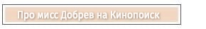

| Канадская актриса болгарского происхождения. Актёрскую карьеру начала, сыграв небольшую роль в телефильме «Семейные игры». Наиболее известна по роли Елены Гилберт / Кэтрин Пирс в телесериале «Дневники вампира». Полное имя - Николина Константиновна Добрев. Родилась в Болгарии в городе София, однако в возрасте двух лет семья переехала в Канаду, где актиса прожила большую часть жизни. Стала наиболее известна после того, как сыграла роли Катерины и Елены в экранизации "Дневники вампира", где с легкостью сочетала сразу две абсолютно разные роли. В 2015 году в своем аккаунте Инстаграм аннонсировала уход из сериала, чем разочаровала многих поклонников. Нина гармонично сочетает в себе женственную и тонкую натуру, а также авантюристку. Легко вписывается в новые роли, какими бы они многогранными не были. Нина активно занимается спортом, всегда поддерживая себя в форме и находя для себя каждый раз новый активнй вид времяпрепровождения. Удивительный человек, сочетающий в себе женственность, талант, харизму, простоту |
Как мисс Добрев изменила концовку сериала Мисс Добрев в новой экранизации |
 |
| Год | Название фильма | Роль |
| 2006 | Семейные игры | Молодая Фрэнни |
| 2009-2017 | Дневники вампира | Елена Гилберт, Кэтрин Пирс |
| 2011 | Соседка по комнате | Мария |
| 2012 | Хорошо быть тихоней | Кэндис Келмекис |
| 2014 | Первородные | Татья |
| 2019 | Семья | Клем |